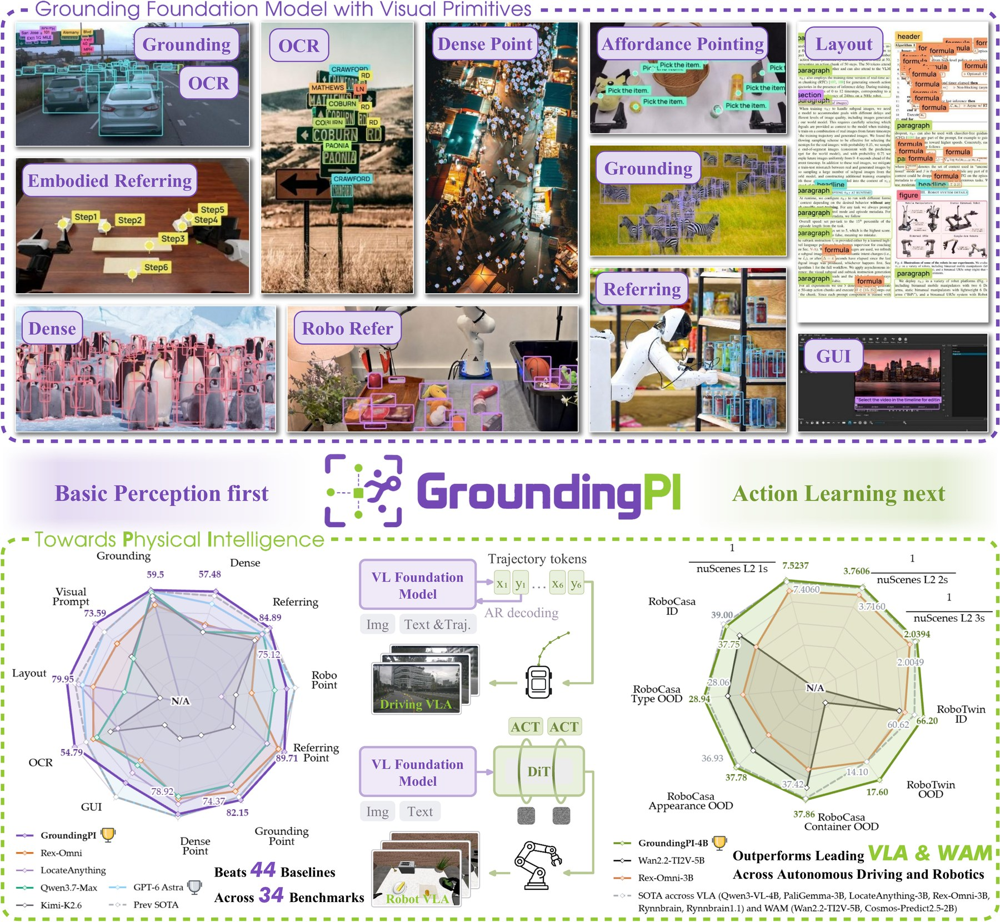
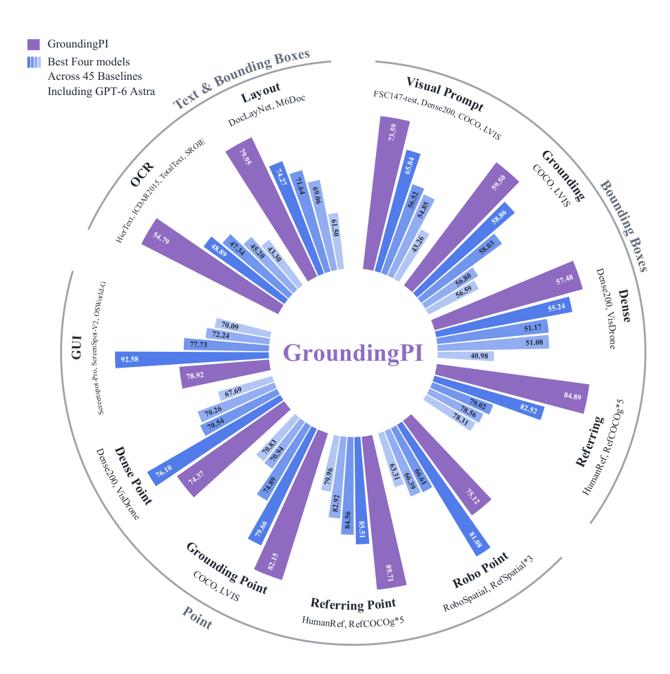
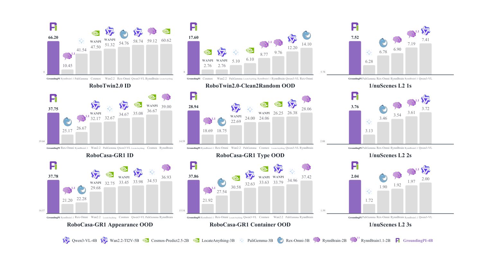
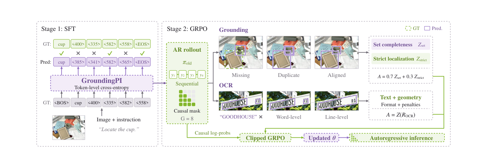

Abstract
Precise grounding matters. It specifies which object is the target and where that object is — even in clutter and for tiny objects — and it has to be fast enough for closed-loop control. Yet vision-language-action (VLA) models and world-action models (WAMs) take perception from general-purpose vision-language and video-generation backbones, which still fail in these settings.
We introduce GroundingPI, a 4B grounding foundation model that generates points and boxes as quantized coordinates in a shared vocabulary. Training combines multimodal and spatial pretraining, supervised fine-tuning, and reinforcement learning with GRPO, using supervision from public datasets and dedicated data engines. Against 44 baselines across 34 grounding benchmarks spanning 11 perceptual capabilities, GroundingPI establishes a new state of the art, averaging 73.68%, above the larger GPT-6 Astra (71.54%).
As a downstream visual backbone, GroundingPI improves performance on robotic manipulation and autonomous driving. On RoboTwin 2.0, it outperforms every mainstream backbone we evaluate in all four out-of-distribution settings, by up to 24.8% relative to the strongest backbone. On RoboCasa-GR1, GroundingPI trained with 50% of the demonstrations outperforms baselines trained with 75%. On nuScenes, used as the visual backbone, GroundingPI attains an average open-loop L2 error of 0.296 m. Analyzing the data recipe across the 11 perceptual capabilities shows dense grounding’s substantial benefits for both, and OCR’s potential as a catalyst for perceptual learning — supporting grounding as a perceptual foundation, and dedicated perceptual pretraining as a promising direction for foundation models of physical intelligence.

Performance
New state of the art in visual grounding11 perceptual capabilities, one model
GroundingPI unifies diverse perception tasks through points, boxes, and a shared coordinate vocabulary.

Transfer to Physical Intelligence
Perception first, action next
Robot Manipulation
On RoboTwin 2.0, GroundingPI outperforms every mainstream backbone in all four out-of-distribution settings — by up to +24.8% over the strongest backbone. On RoboCasa-GR1, it beats baselines trained with 50% more demonstrations.
Autonomous Driving
Used as the visual backbone on nuScenes, GroundingPI attains an average open-loop L2 error of 0.296 m, improving end-to-end driving over general-purpose VL backbones.
Action-Data Efficiency
GroundingPI trained with 50% of the demonstrations outperforms baselines trained with 75% — dedicated perceptual pretraining extracts more from every demonstration.
Demo
Points and boxes, liveThe interactive Gradio demo is hosted on Hugging Face Spaces.
Click Load demo to embed it here, or open it in a new tab.
Method
Points and boxes as a shared visual vocabulary

Unified task interface
One model, one prompt protocol — every task is grounded in the same coordinate vocabulary.
Locate all the instances that match the following categories: car</c>person.Locate the target referred to by the following description: the red car.Point to: car</c>person.Point to the target referred to by the following description: the red car.OCR task detect all the text in box format.Detect all document layout elements that match the following categories: title</c>text.Point to the UI element to click for the following instruction: open the settings menu.Given reference boxes … find all similar objects and output their bounding boxes.Citation
If this work supports your research, please cite:
@misc{yu2026groundingpigroundingfoundationmodel,
title = {{GroundingPI}: A Grounding Foundation Model towards Physical Intelligence with Visual Primitives},
author = {Qize Yu and Lianrui Fan and Boyu Chen and Jiaqi Liang and Xini Ding and Yue Chen and Zetian Song and Yuran Wang and Yi Zou and Kaixuan Wang and Tianxing Chen and Wenxuan Song and Bohan Zhou and Mingleyang Li and Siqiao Huang and Yuqi Ye and Caigao Jiang and Wei Wei and Ruihai Wu and Hang Zhang and Yixiao Ge and Shuchang Zhou and Shilong Liu and Xianming Liu and Ping Luo and Shiyu Huang},
year = {2026},
eprint = {2609.39601},
archivePrefix = {arXiv},
primaryClass = {cs.CV},
url = {https://arxiv.org/abs/2609.39601},
}